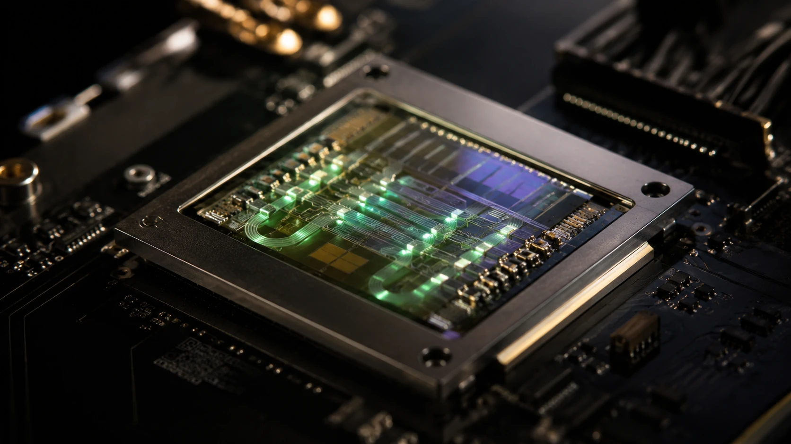
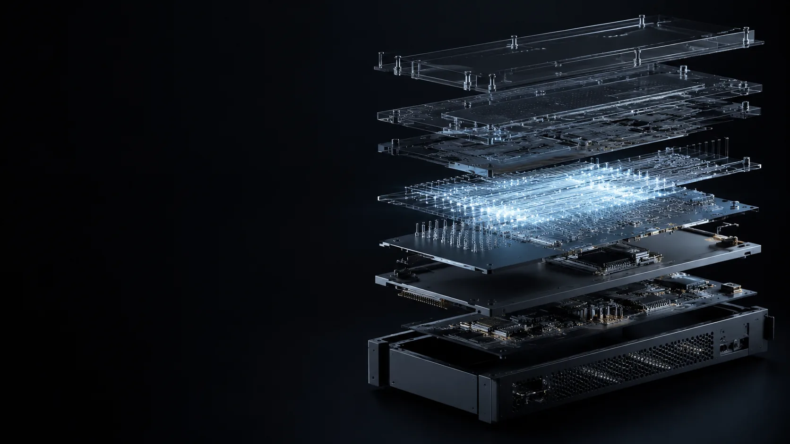
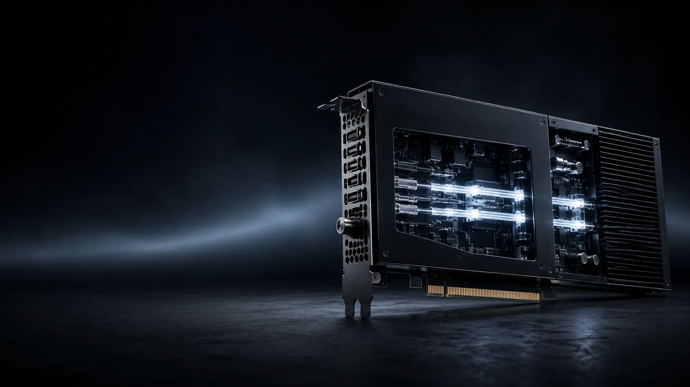
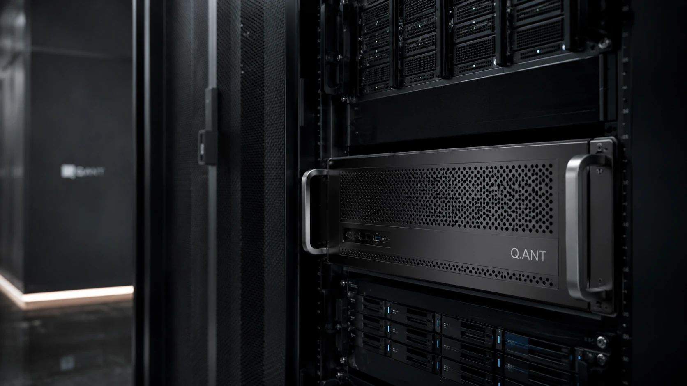
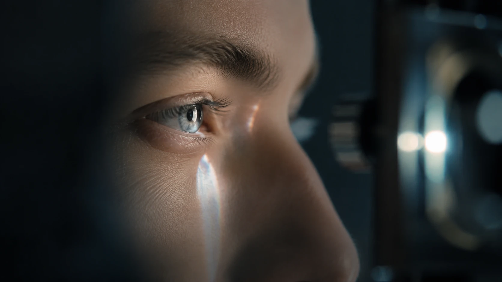
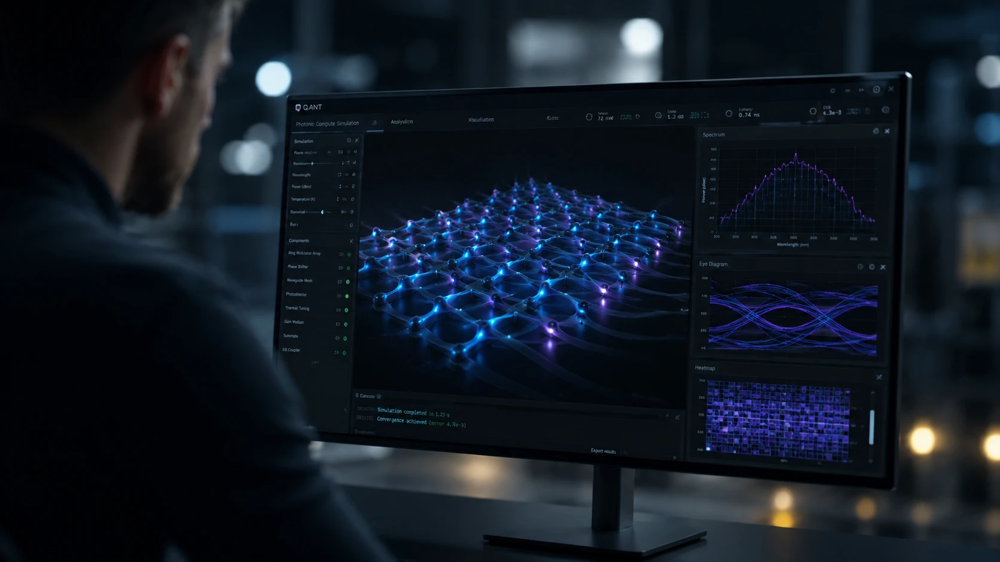
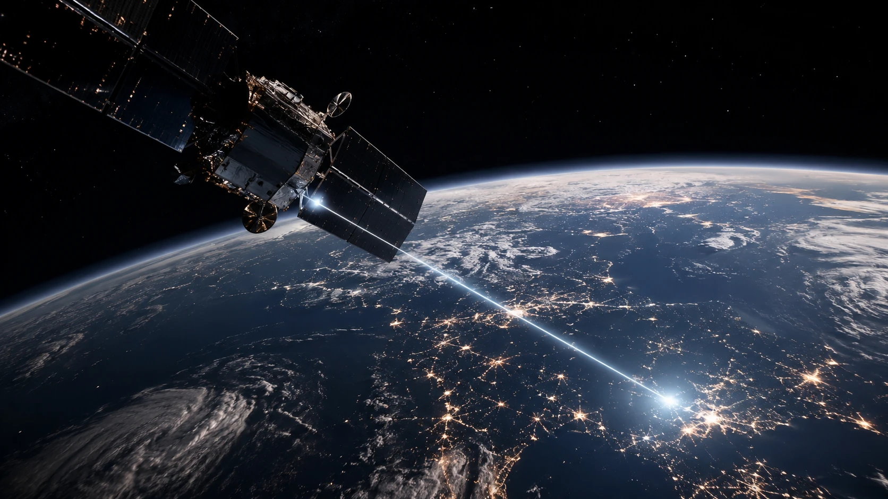
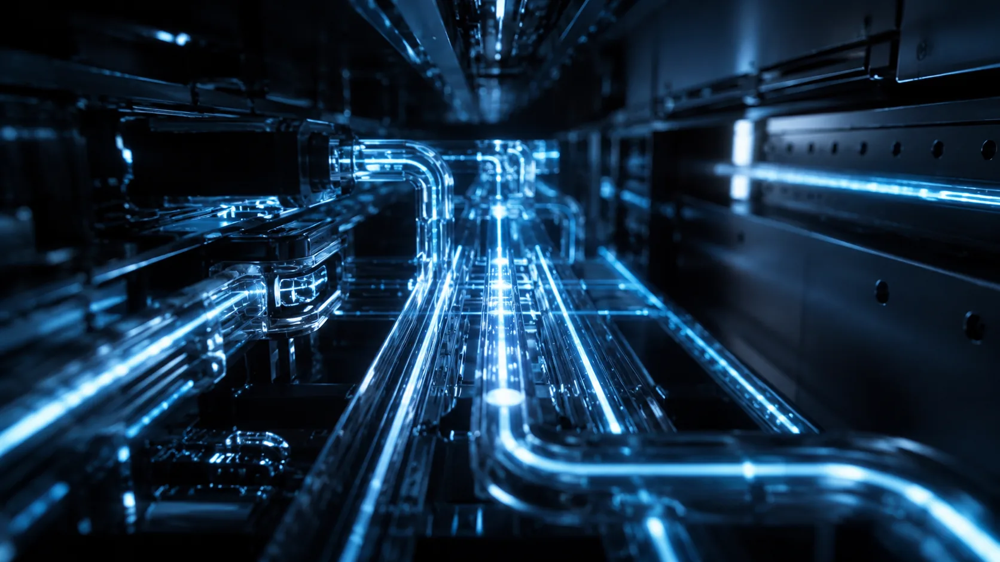
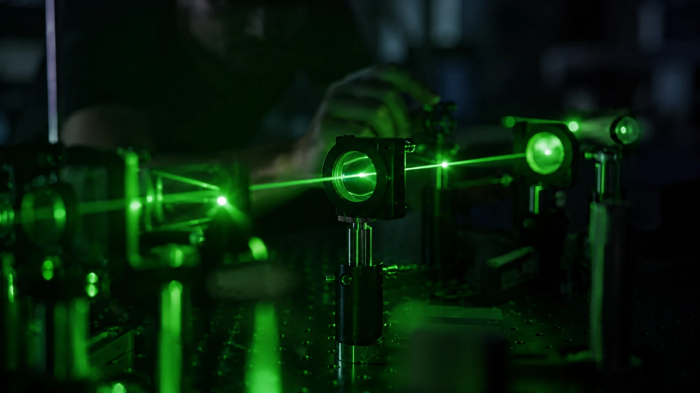
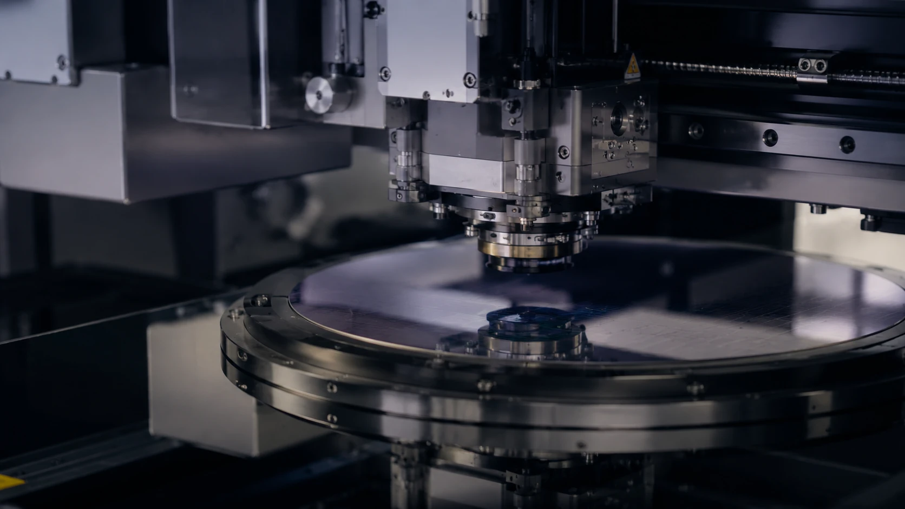

01
Silicon reaches its limits
CMOS scaling slows as transistor density approaches physical and economic ceilings.
Light-based processors for the next era of AI and HPC — engineered in Stuttgart, deployed at LRZ and Jülich.
CMOS scaling slows as transistor density approaches physical and economic ceilings.
Training and inference push data-center power and cooling budgets past sustainable bounds.
Moving charge dissipates heat. The interconnect, not the maths, now caps performance.
Data is encoded into light, split across waveguides, and recombined. The interference pattern is the computation — a matrix multiply performed at the speed of light, with almost no heat.

Thin-film lithium-niobate photonics, stacked layer on layer. Modulators, waveguides and detectors are co-integrated on a single die — the computation lives in the light passing between them.
A drop-in Native Processing Server and a PCIe accelerator card — photonic compute that speaks the language your data centre already runs.






Photonic interference dissipates almost nothing. The maths happens in flight — no charge to move, no heat to pump out.
From wafer to working photonics — designed, fabricated and characterised in-house.



Bring photonic acceleration to your AI and HPC stack — talk to the team building it.